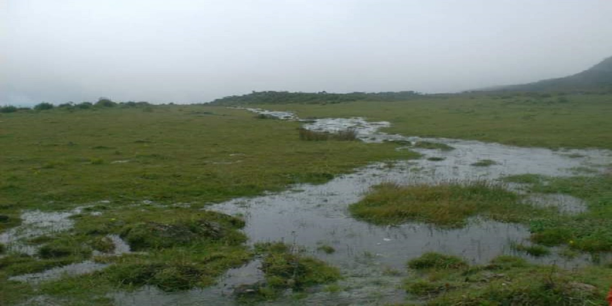

About Me

Hi, thank you so much for coming.
My name is Victor Malpica. I describe myself as a part-time adventurer and a full-time student. Years ago, I was part of an excursion team, and during my time with that group, I fell in love with nature, animals, and trekking. The majority of my ex-team members were students in the computer science area. I owe them much, especially my earliest interactions with video game programming and software development. Some people call me the jack of all trades because I like to learn new things and put them into practice as soon I feel comfortable with the information I gather through various credible sources; that is why I am very skilled with pastry. Recently, I left behind my survival gear and started baking cakes and doing pastries for a living. In my free time, I program modifications of games for personal use; these side projects have been useful for me because I am honing my programming skills and expanding my knowledge about video game engines.

Nowadays, I am a part of the B.Y.U. Idaho online study program, where I am learning and honing my programming skills to get a degree in Software Development and be part of the workforce that makes it possible for everyone to access the sea of possibilities and innovations that characterize the applied technologies area.